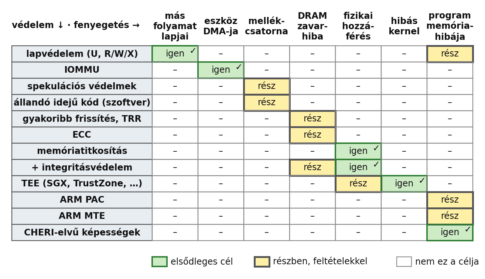

A lapvédelem (Védelem és virtualizáció hardveres támogatása) garantálja, hogy egy folyamat nem írhat más memóriájába. 2014-ben azonban egy kutatócsoport azt mutatta ki, hogy kereskedelmi DRAM-modulokban bizonyos sorok ismételt aktiválása a szomszédos sorokban bitátbillenést okozhat – olyan cellákban, amelyeket senki nem ért el [S-ROWHAMMER]. A jelenség neve Rowhammer (sorkalapálás). A jogosultságbitek az architekturális hozzáférést szabályozzák, a DRAM fizikai viselkedését nem.
Ebben az alfejezetben a jelenséget egy oktatási modellen vizsgáljuk: sorszámokkal dolgozó számlálókon, amelyek semmilyen valódi memóriát nem érintenek. A cél a védekezések hatékonyságának és árának összevetése, majd a hardveres biztonsági építőkövek elhelyezése egy fenyegetési modellben. Valódi rendszer elleni kihasználást a könyv nem tárgyal.
Definíció. A fenyegetési modell (threat model) rögzíti, ki a támadó, mit tud megfigyelni, mit tud befolyásolni, és mit akarunk megvédeni. A Rowhammer alapesetében a támadó jogosultság nélküli kód ugyanazon a gépen (akár egy másik virtuális gépben), amely a saját memóriáját tetszőlegesen sűrűn olvashatja; a védendő érték a mások adatainak sértetlensége.
Képzeljünk el egy fiókos szekrényt, amelynek minden fiókjában poharak állnak. Ha az egyik fiókot sűrűn, hevesen rángatják, a szomszéd fiókok poharai apránként a peremhez csúsznak. Egy rántás semmit sem jelent, sok ezer egymás után viszont fellökhet egy poharat. A rendszeres igazgatás (frissítés) visszatolja a poharakat a helyükre – de amelyik már felborult és eltört, az törött marad.
A DRAM-ban (A DRAM működése) a „rántás” a sornyitás (ACT), az „igazgatás” a frissítés. Az ábra három helyzetet mutat egy 16 soros modellbankban.
Figyeld meg, hogy a támadó (háromszöggel jelölt) sorok maguk nem sérülnek: az aktiválás visszaírja a saját töltésüket. A sérülés mindig a szomszédokban jelentkezik.
A sor kiválasztása a szóvezetéken feszültségváltozást okoz, amely a szomszédos sorok celláiban kis töltésveszteséget idéz elő. A hatás összeadódik, amíg a sort fel nem frissítik; ha előbb éri el a cella tűrését, a tárolt bit megváltozik. A küszöb cellánként eltér, és a technológia zsugorodásával a kutatások szerint csökkent (ellenőrizendő: a [S-ROWHAMMER] tanulmány a vizsgált DDR3-modulokon százezres nagyságrendű minimumot közölt, későbbi munkák újabb modulokon ennél jóval kisebbet).
Definíció. A modellben a támadósor (aggressor) az aktivált sor, az áldozatsor (victim) a szomszédja. Minden sorhoz egy zavarszámláló tartozik: a szomszéd aktiválása eggyel növeli, a sor frissítése vagy saját aktiválása nullázza. Ha (küszöb), a modell átbillenést jegyez fel.
A támadó egyoldalas mintában az áldozat egyik szomszédját, kétoldalas mintában mindkettőt aktiválja felváltva. Az aktiválások száma korlátozott: két ACT között egy banknak legalább idő kell (A DRAM működése), ezért egy frissítési ablakban legfeljebb
aktiválás fér el, ahol a frissítés foglaltsága. ms, ns mellett ez kb. 1,39 millió. Ha a teljes ráta , a kétoldalas mintánál a közrefogott áldozat zavara egy ablakban , egyoldalasnál (ha a másik aktivált sor messze van). Tehát átbillenés csak akkor lehet, ha .
Ha a frissítés -szor gyakoribb, az ablak . A kétoldalas mintát akkor hárítja el, ha
Az ár a frissítés foglaltsága: . Nagy mellett ez 100% fölé nőne, ami lehetetlen: a bank folyton frissítene.
A TRR (target row refresh, célzott sorfrissítés) elve: figyeljük, mely sorokat aktiválják sokat, és frissítsük soron kívül a szomszédaikat. Ehhez sorszámlálók kellenének minden sorra, ami drága; a gyakorlat kis táblát használ. A kérdés, melyik sort tartja a tábla.
A modell FIFO-táblája új sor érkezésekor a legrégebbi bejegyzést dobja ki. Ha a támadó a tábla méreténél több sort forgat körbe, minden bejegyzés kiesik, mielőtt elérné a kioldási értéket – a tábla soha nem lép közbe.
A Misra–Gries-számláló egy klasszikus gyakorielem-algoritmus: ha a tábla tele van, és új sor jön, minden számláló csökken eggyel (a modellben a köteg méretével), az új sor nem kerül be. Egy sor, amelyet sokszor aktiválnak, így nem tűnhet el észrevétlenül. Legyen a tábla mérete, az ablakban az aktiválások száma. Minden csökkentés egységet vesz el a rendszerből (az számlálóból és a be nem került új sorból), a rendszerbe pedig legfeljebb új és a tábla kezdeti egysége kerül, tehát legfeljebb csökkentés történik. Ha egy sornál egy időszakban nem lépett közbe a TRR, a valódi aktiválásszáma így kisebb, mint . Az áldozat az utolsó frissítése óta legfeljebb egy ablaknyi ideje gyűjt zavart, és ezalatt egyik szomszédjánál sem volt közbelépés (különben frissült volna), tehát
Ha ez a korlát nem nagyobb -nál, a modellben nem lehet átbillenés – bármilyen mintával. A feltétel elégséges, nem szükséges: konkrét mintára kisebb tábla is elég lehet.
A valódi TRR-megoldások gyártónként eltérnek és többnyire nem nyilvánosak; a kutatás megmutatta, hogy egyes megvalósítások megkerülhetők (ellenőrizendő: a TRRespass és későbbi munkák). Az újabb DRAM-szabványok szabványos kérési mechanizmust is adnak a célzott frissítéshez (ellenőrizendő).
Az ECC-memória SECDED kódja (Megbízhatóság: hibák, ECC és redundancia) 64 bites szavanként egy hibát javít, kettőt jelez. Rowhammer ellen ez részleges védelem: ha egy szóban kettő billen át, a rendszer hibát jelez (sok esetben leáll – szolgáltatásmegtagadás), három vagy több hiba pedig észrevétlen vagy hibásan „javított” adatot adhat. Az alábbi kód egyenletes, független hibákat feltételezve becsli, mikor mi történik; a valódi hibák ennél csomósodóbbak lehetnek.
Szoftveres oldalról a biztonsági tartományok (rendszermag, virtuális gépek) fizikai memóriáját elválasztó őrsorokkal (guard rows) lehet tartani, és a gyanúsan sűrű aktiválás teljesítményszámlálókkal figyelhető. Ezekhez az operációs rendszernek ismernie kell a címleképezést, ami platformfüggő.
A Rowhammer mutatja, hogy egyetlen védelem sem elég. A modern processzorok több építőkövet kínálnak (a részletek termékfüggők, ellenőrizendő: [S-ARM-DOC], [S-INTEL-SDM]):

A táblázat soraiból egyik sem fed le mindent: a mellékcsatornák (Cache-mellékcsatornák) és a tranziens végrehajtás (Spectre és Meltdown) ellen az állandó idejű kód és a spekulációs védelmek kellenek, a zavarhibák ellen a DRAM-oldali eszközök. A „rész” szót komolyan kell venni: egy védelem a feltételein kívül nem véd.
Továbbvitt eredmény. A hardveres biztonság mérlegelése három kérdésre épül: fenyegetés (ki, mit lát, mit módosíthat), védekezés (melyik réteg, milyen feltételekkel hat) és ár (teljesítmény, memória, terület, összetettség). A Rowhammernél ez konkrétan: a frissítés szorzója a foglaltságot növeli, a TRR-tábla területet fogyaszt, az ECC csak korlátozottan véd. Ezt a keretet a Vegyes vizsgafeladatsor használja.
Legyen ms, , a támadó aktiválás/ms, kétoldalas mintával.
1. Mikor billen? Az áldozat zavara ms-onként 20 000-rel nő, tehát ms után éri el a küszöböt, jóval a 64 ms-os frissítés előtt. A millió belefér a millióba.
2. Frissítési szorzó. , tehát . A foglaltság : nem megvalósítható. A gyakoribb frissítés önmagában ennél a rátánál nem elég.
3. Misra–Gries. Legyen . Kell: , azaz , , tehát elég. Egy bejegyzés kb. 16 bit sorszám és 13 bit számláló (): kbit bankonként. Ez a területár.
A kísérletek fenyegetési modellje a fenti (jogosultság nélküli, sűrűn aktiváló támadó, a védendő a mások adatainak sértetlensége), a vizsgált védekezések a gyakoribb frissítés, a TRR-táblák és az ECC. A modell a helyzeteket lejátssza (16 sor, az áldozat a 7. sor):
import sys; sys.path.insert(0, "code")
from archkit import dram
def run(kind, **kw):
pat = dram.hammer_pattern(kind, victim=7, rows=16)
return dram.simulate_rowhammer(pat, rows=16, **kw)
for kind in ("idle", "single", "double", "many"):
r = run(kind)
first = f"{min(r.flips.values()):5.2f} ms" if r.flips else " - "
print(f"{kind:6s} átbillent: {len(r.flips)}, első: {first}, max. zavar: {max(r.peak)}")
for k in (4, 16, 26):
r = run("double", refresh_multiplier=k)
print(f"frissítés {k:2d}×: átbillent {len(r.flips)}, "
f"foglaltság {dram.refresh_overhead(multiplier=k):.0%}")idle átbillent: 0, első: - , max. zavar: 200
single átbillent: 3, első: 5.00 ms, max. zavar: 640000
double átbillent: 3, első: 2.50 ms, max. zavar: 1280000
many átbillent: 8, első: 9.97 ms, max. zavar: 320000
frissítés 4×: átbillent 3, foglaltság 18%
frissítés 16×: átbillent 1, foglaltság 72%
frissítés 26×: átbillent 0, foglaltság 117%Az egyenletes terhelés ártalmatlan, mert minden sor hamar újra aktiválódik. A szorzó a modellben megállítja a kétoldalas mintát, de a foglaltsága meghaladja a 100%-ot. Most a TRR-táblák:
for mit, entries in (("trr_fifo", 4), ("trr_mg", 4), ("trr_mg", 8), ("trr_mg", 85)):
out = []
for kind in ("double", "many"):
r = run(kind, mitigation=mit, entries=entries)
out.append(f"{kind}: {len(r.flips)} sor, {r.mitigation_refreshes:3d} TRR")
print(f"{mit:8s} m={entries:2d} | " + " | ".join(out))
print(f"MG-korlát m=85: {dram.mg_condition(5000, 85, 20000 * 64):.0f} < 50000")
for n in (4, 16, 64):
p = dram.ecc_row_outcomes(n)
print(f"{n:2d} hiba/sor: javítható {p['corrected']:.4f}, jelzett 2 {p['detected']:.4f}, "
f"3+ {p['beyond']:.6f}")trr_fifo m= 4 | double: 0 sor, 512 TRR | many: 8 sor, 0 TRR
trr_mg m= 4 | double: 0 sor, 512 TRR | many: 8 sor, 0 TRR
trr_mg m= 8 | double: 0 sor, 512 TRR | many: 0 sor, 512 TRR
trr_mg m=85 | double: 0 sor, 512 TRR | many: 0 sor, 512 TRR
MG-korlát m=85: 49767 < 50000
4 hiba/sor: javítható 0.9942, jelzett 2 0.0058, 3+ 0.000004
16 hiba/sor: javítható 0.8889, jelzett 2 0.1106, 3+ 0.000529
64 hiba/sor: javítható 0.1339, jelzett 2 0.8287, 3+ 0.037380A négyelemű FIFO-tábla a kétoldalas minta ellen még jó, a nyolc támadósor ellen viszont egyetlen célzott frissítést sem végez. A Misra–Gries-tábla bejegyzéssel már megvédi ezt a konkrét mintát; a minden mintára szóló garancia ára. Az ECC-becslés szerint néhány hiba egy sorban szinte mindig javítható; 64 hibánál viszont a modell szerint kb. 87% eséllyel van a sorban javíthatatlan szó (83% jelzett kettős hiba, 3,7% három vagy több hiba egy szóban).
Nyisd meg a Rowhammer-modell lapot.
A Rowhammer DRAM-zavarhiba: egy sor sűrű aktiválása a szomszédos sorok celláiban zavart halmoz fel, és ha a frissítés előtt eléri a küszöböt, bit billen át – a jogosultságellenőrzést megkerülve. Az oktatási modellben a kétoldalas mintánál az áldozat zavara . A gyakoribb frissítés ára a foglaltság, nagy rátánál megvalósíthatatlan; a kis TRR-tábla sok támadósorral kijátszható, a Misra–Gries-számláló viszont garanciát ad alakban; az ECC csak részleges védelem. A memóriatitkosítás, a TEE, a PAC, az MTE és a CHERI más-más fenyegetést fed le. A biztonság mérlegelése mindig három kérdés: mi a fenyegetés, melyik védekezés fedi le, és mi az ára. A modell számai oktatási értékek, nem valódi modulok adatai.
1. Az egyik szomszéd a teljes ráta felét kapja: ; a küszöböt ms alatt éri el.
2. , tehát aktiválás/ms.
3. , azaz , , .
4. Példa: a támadó egy bérlő virtuális gépe, jogosultság nélkül; a saját memóriáját tetszőlegesen aktiválhatja, a szomszéd bérlő és a hipervizor adatának sértetlenségét veszélyezteti. Védelmek: ECC és célzott frissítés (DRAM-oldal; terület és energia), őrsorok vagy különálló fizikai memória-tartományok bérlőnként (elveszett kapacitás, szoftveres összetettség), hibaszámlálás és riasztás (üzemeltetési ár), bizalmas VM titkosítással és integritással (késleltetés, sávszélesség). A maradék kockázatot (új minták) dokumentálni kell.
5.
def protects(m):
return not run("many", mitigation="trr_mg", entries=m, trigger=1000,
threshold=10000).flipped
smallest = next(m for m in range(1, 200) if protects(m))
bound = next(m for m in range(1, 2000)
if dram.mg_condition(1000, m, 20000 * 64) <= 10000)
print(f"a mintára elég: m = {smallest}; a korlát garantálja: m = {bound}")a mintára elég: m = 8; a korlát garantálja: m = 426A konkrét mintának nyolc támadósora van, ezért nyolc bejegyzés már követi őket; a korlát ennél sokkal nagyobb, mert a legrosszabb, tetszőleges mintára szól.
6. A leképezés titkossága megnehezíti a támadónak a szomszédos sorok megtalálását (idő és erőfeszítés), de nem szünteti meg a zavart: a cella fizikailag ugyanúgy sérülékeny, és a leképezés mérésekkel kitalálható lehet. Csak nehezítő tényező, nem garancia.